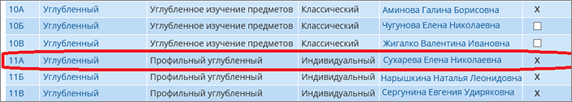
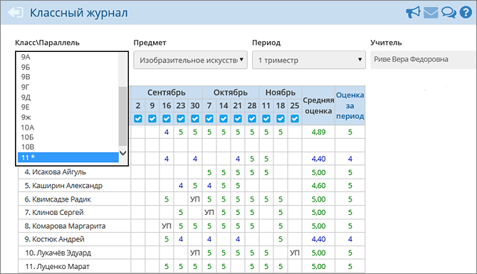

Возможность набора в ПГ из конкретного класса появляется, если у класса на экране Обучение -> Классы определён признак: Учебный план = Индивидуальный.

После того как класс получает признак «Учебный план = Индивидуальный», в любом месте системы СГО в выпадающем списке «Класс:» он перестаёт быть виден по своему названию, вместо этого выводится номер параллели и знак «звёздочка», как на следующей иллюстрации:

Отметим, что в школе могут одновременно существовать два вида классов: работающие по «классическому» и по «индивидуальному» учебным планам.